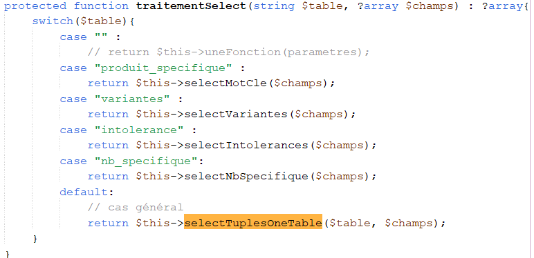

Travaux pratiques - Chocolatein (API, Audit PCA)
2ème année BTS SIO (Décembre 2024)
Sur la première partie de ce TP, cela fait suite à mon début d'apprentissage de PHP, plus particulièrement ici sur le développement d’API REST sur ce projet. L’objectif du projet était de comprendre comment construire et exploiter une API, afin de permettre aux applications d’accéder à une base de données via des requêtes. Cette partie m’a permis de découvrir les principes des API REST (méthodes HTTP, routes, statuts, formats de réponse JSON, etc.), d’en créer une en PHP, et de la tester à l’aide de l’outil Postman. J’ai ainsi pu me familiariser avec la distinction entre front-end et back-end.
Suite à cette partie, j'ai effectué l'audit du Plan de Continuité d'Activité (PCA) qui permet d'évaluer si la continuité des services est faite en cas de panne du système principal. Ici cela consistait à vérifier l'offre d'hébergement de l'application Web, pour voir si le PCA pouvait être satisfait en cas de panne.
🔧 Langages et technologies utilisés :
- PHP
- MySQL
- Postman
- Json
📎 Documents liés :
✅ Compétences couvertes :
- - Analyser les objectifs et les modalités d’organisation d’un projet : exposer une base de données via des services web.
- - Planifier les activités : conception de l’API, gestion des routes, tests.
Compte rendu et captures d'écran de l'application :
Cette requête vise à sélectionner tous les produits dans la table produit :

Cela fait donc appel à traitementSelect depuis le routage GET, puis aucun cas spécifique ici donc cela appelle la fonction selectTuplesOneTable :

Ici c'est la même chose sauf qu'on spécifie 'idgamme' :
Cette requête vise à insérer un produit dans la table produit :

Cela fait donc appel à traitementInsert depuis le routage POST, puis appelle la fonction insertProduit :

Cette requête vise à supprimer un produit dans la table produit :

Cela fait donc appel à traitementInsert depuis le routage POST, puis aucun cas spécifique ici donc cela appelle la fonction deleteTuplesOneTable :